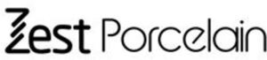

Trade Mark Journal No.2025/039 26 September 2025
WO0000001875048 (21)
Office of origin: Israel
Date of International Registration:29 June 2025
Date of designation in the UK:
29 June 2025

International priority date claimed: 29 December 2024
(Israel)
(379991)
- Class 21
- Plates and bowls made of ceramic and porcelain; dishes not of precious metal; dishes; plastic tableware; kitchen cooking accessories made of plastic; ladles; wooden trays and serving utensils; stainless steel water bottles and glasses; food storage boxes; plastic and glass food storage boxes; cups, bowls, mugs and plates; glass bottles; drinking glasses; cutting boards; serving and cooking utensils from terracotta; stainless steel pots and pans; aluminum pots and pans; glassware, porcelain and earthenware not included in other classes; crockery, namely, pots, dishes, drinking cups and saucers, bowls, serving bowls and trays; kitchen utensils, not of precious metal; drinking vessels; cooking pans, non-electric; glass pans; containers for household or kitchen use; thermally insulated containers for food; household or kitchen utensils and containers; baking dishes; cooking pots; glass mugs; mugs, not of precious metal.
VIDAN MARKETING (2011) LTD
Representative: Yaffa Zohar Dagan, Law Office, 3/3 Sinai St., 2069303 Yoqneam Illit, ISRAEL